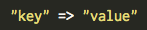
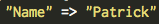
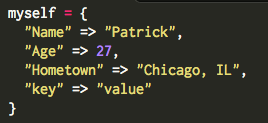
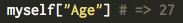

The Hash in Ruby - When and How to Use It
August 31, 2014
- What is the hash?
- When to use it?
- How to use it?

Use hashes whenever you are supplying two objects - a key and a value. A simple example would be "Name" which a key and "Patrick" which is a value.

Use the following process for creating hashes. Define the hash with the hash name like you would for any other variable. Put the key/value pairs inside squiggly lines. Put keys on the left side of the expression and values on the right-side. Lasty, don't forget to separate each key-value pair with commas.

Unlike arrays, hashes are not stored in any particular order. Hashes are retrieved using the 'key' rather than their position. The way to access a hash would be: hash_name[key]. In our example below the following would return the value '27':

Another important point to consider is that keys must be unique. Values on the other hand are allowed to repeat. There are other ways to create hashes than the method I mentioned above, but that is beyond the scope of this article. Hashes are another useful class in the Ruby programming language.